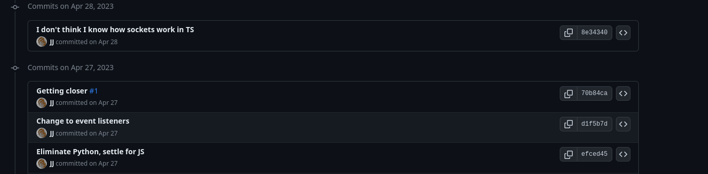
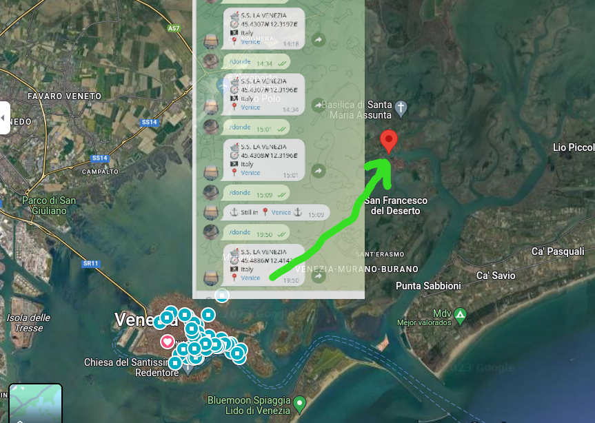
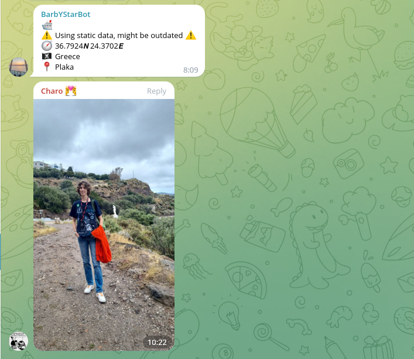
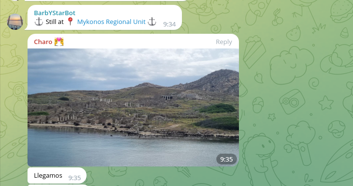
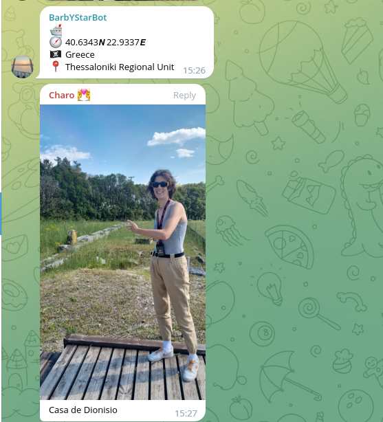

Cómo seguir al crucero de tus sueños
jjmerelo,

JJ
Padre orgulloso
Veneciófilo
¿Cuál es el barco de tus sueños?
Siguelo
¿Como comienza un proyecto de software libre?
Preguntándole a ChatGPT
ü§ñ: "B√∫scate la vida"
# Replace API_URL with the URL of the API that provides information about the harbor
api_url = f'https://example.com/api/harbors/{harbor_code}/ship-info?key={api_key}'
# Make an HTTP request to the API to obtain information about ship arrivals and departures
response = requests.get(api_url)
ship_info = response.json()
Hoy: VesselFinder

Automatic identification of ships lo sabe
No sin mi API
Un torrente:
AISStream
¡Usemos
Python
deno
Node.js!

denoEscuchando el Mediterráneo
const socket = new WebSocket("wss://stream.aisstream.io/v0/stream");
// Lee BoundingBoxes de un fichero...
socket.addEventListener("open", (_) => {
const subscriptionMessage = {
APIkey: API_KEY,
BoundingBoxes: boundingBoxes, // [ [ [46, -10], [30, 30] ] ]
};
socket.send(JSON.stringify(subscriptionMessage));
}); Mensaje recibido
{
Message: {
PositionReport: {
Cog: 116.2,
CommunicationState: 59916,
Latitude: 38.035088333333334,
Longitude: 23.55172333333333,
MessageID: 1,
NavigationalStatus: 0,
PositionAccuracy: true,
Raim: false,
RateOfTurn: -128,
RepeatIndicator: 0,
Sog: 0,
Spare: 0,
SpecialManoeuvreIndicator: 0,
Timestamp: 34,
TrueHeading: 511,
UserID: 237128700,
Valid: true
}
},
MessageType: 'PositionReport',
MetaData: {
MMSI: 237128700,
MMSI_String: 237128700,
ShipName: 'MARIA T',
latitude: 38.035088333333334,
longitude: 23.55172333333333,
time_utc: '2023-10-13 15:44:34.571915913 +0000 UTC'
}
} Procesando los mensajes
socket.addEventListener("message", (event) => {
const aisMessage = JSON.parse(event.data);
const metadata = aisMessage["MetaData"];
if (metadata["ShipName"].indexOf(SHIP_NAME) >= 0) {
console.warn("Encontrado ", metadata);
const roundLat = metadata["latitude"].toFixed(ROUNDING_PRECISION);
const roundLon = metadata["longitude"].toFixed(ROUNDING_PRECISION);
// Next: do something with coordinates
}
})npm i --save AISstreamer
import {AIStrack, defaultBoundingBox} from "../lib/index.js";
const shipName = process.argv[2].toUpperCase();
console.log( "Tracking ship: " + shipName );
function printShipMessage( message ) {
if ("MetaData" in message) {
const metadata = message["MetaData"];
if ( metadata["ShipName"].trim() === shipName) {
console.log(message);
}
}
}
const API_KEY = process.env.AISSTREAM_API_KEY;
AIStrack( API_KEY, shipName, defaultBoundingBox, printShipMessage
);Pero dime dónde
Geocoding inverso: coordenadas a lugar
Usando GeoApify
axios.get(
`https://api.geoapify.com/v1/geocode/reverse?lat=${roundLat}&lon=${roundLon}&apiKey=${GEOAPI_KEY}`
)
.then((response) => {
// do stuff
}); JSON de vuelta
{
country_code: 'it',
housenumber: '1',
street: 'Fondamenta Santa Caterina',
country: 'Italy',
datasource: {
sourcename: 'openaddresses',
attribution: '© OpenAddresses contributors',
license: 'BSD-3-Clause License'
},
postcode: '30142',
state: 'Veneto',
suburb: 'Castello',
county: 'Venezia',
city: 'Venice',
state_code: 'VEN',
lon: 12.413779,
lat: 45.488283,
distance: 43.227740241522895,
result_type: 'building',
formatted: 'Fondamenta Santa Caterina, 1, 30142 Venice VE, Italy',
}El resultado se guarda en un JSON
{
"country":"Italy",
"state":"Veneto",
"county":"Venezia",
"type":"building",
"latitude":"45.4886",
"longitude":"12.4141",
"messageType":"PositionReport",
"ship":"S.S. LA VENEZIA",
"city":"Venice"
}Navegando por la laguna
¿Funcionó?


